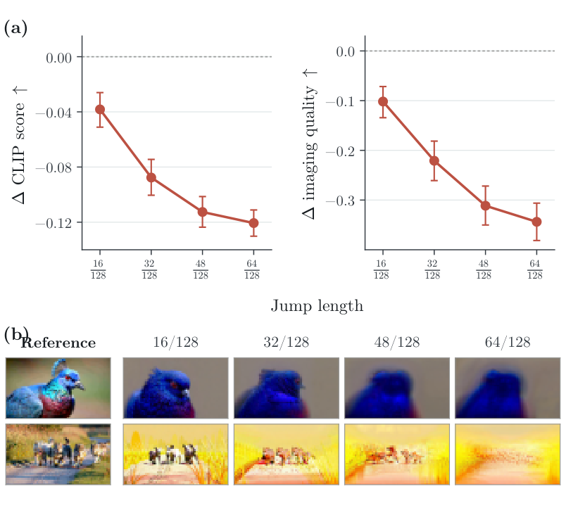
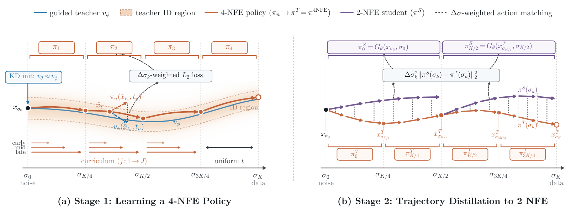
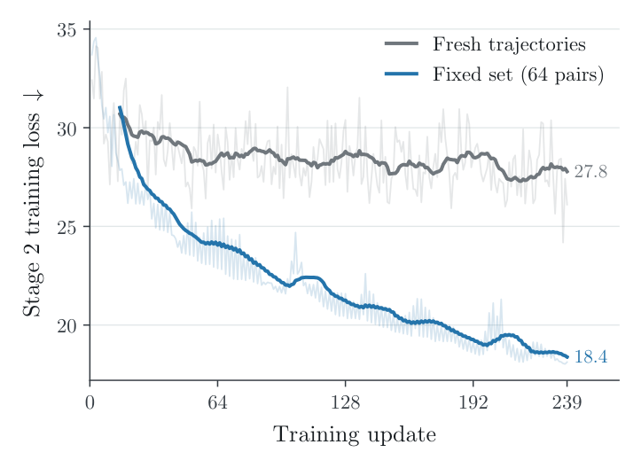
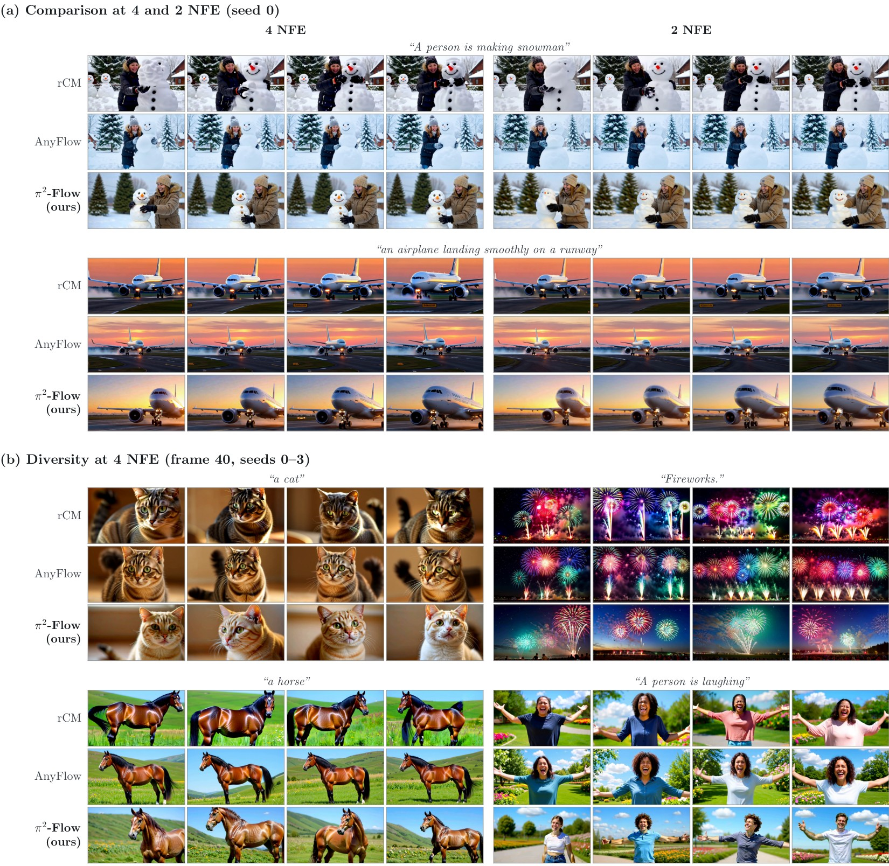

Wan2.1-1.3B, 81 frames at 832×480, seed 0, from the VBench evaluation of the results table (the models receive the extended prompts). The seed indexes each code base's own noise, so different methods share the prompt and seed but not the noise; our 4- and 2-NFE videos share the noise. *Official checkpoints.
Abstract
Video diffusion models generate high-quality videos, but their iterative sampling is expensive. While distribution matching distillation (DMD) accelerates generation to a few steps, it reduces sample diversity. Flow-map distillation methods such as π-Flow preserve diversity by learning the teacher's trajectories, yet π-Flow still lags behind DMD in quality, especially at 2 NFE. We show that this gap arises because π-Flow learns long jumps poorly due to state-dependent teacher reliability: π-Flow queries the teacher at student-generated states, but the teacher is reliable only near its own trajectories, and velocity errors integrated over a long jump carry queries out of distribution where teacher supervision becomes unreliable. Building on this analysis, we propose π²-Flow (progressive π-Flow), which keeps queries where the teacher is reliable by increasing jump length progressively. In Stage 1 (4 NFE), π²-Flow pairs a jump-length curriculum with Δσ action weighting and guided initialization to learn short jumps reliably with on-policy π-Flow. In Stage 2 (2 NFE), it distills the trajectories of the frozen 4-NFE policy over a small, fixed set of trajectories with full-batch updates, avoiding teacher queries at student states altogether. On Wan2.1-1.3B and 14B, π²-Flow closes the quality gap with DMD-based methods across 4 and 2 NFE—achieving the highest VBench scores on 1.3B at both 4 NFE (85.22) and 2 NFE (84.56)—while substantially outperforming prior π-Flow distillation and preserving higher sample diversity than DMD.
π-Flow trusts the teacher at states the teacher has never seen
π-Flow distills a teacher into a few-step student without matching output distributions: one student evaluation at a source state xs produces a velocity policy π, the student rolls this policy out to an intermediate state x̂t, and it is trained to match the teacher's velocity vϕ(x̂t, t) there. This is on-policy distillation, and it assumes the expert gives good supervision at any state the student visits.
A diffusion teacher does not satisfy this assumption. It is reliable near its own trajectories and can be unreliable far from them. Because x̂t comes from integrating the student's policy, a velocity error moves x̂t in proportion to the jump length. We call this state-dependent teacher reliability.
1The teacher's denoising trajectories
The guided teacher vϕ integrates from noise (s = 1) to a clean video (t = 0) in 128 small steps. Near these trajectories, its velocity can be trusted.
2π-Flow queries the teacher at student states
One student evaluation gives a policy π = Gθ(xs, s). π-Flow rolls it out to x̂t and matches π(x̂t, t) to the teacher velocity vϕ(x̂t, t) at that state.
3Short jumps stay in distribution
After a short 16/128 jump, x̂t stays near the teacher's trajectories. Continuing generation from it with the teacher gives a video close to the reference.
4Long jumps leave it
From pure noise, longer jumps carry x̂t out of distribution and the teacher's continuation degrades. At 64/128, the first step of 2-NFE generation, CLIP score drops by 0.12 and imaging quality by 0.34.
Schematic. Video frames are the middle frame of the teacher's continuation for one prompt; the Δ values are paired differences to the continuation from the 128-step reference state, averaged over 64 prompts (Wan2.1-1.3B, initialized student). Step with the arrows or the keyboard, or scrub the bar.
Measuring it: continue generation from the student's query state
To test whether the teacher is still reliable at the student's queries, we let the initialized student take one jump from pure noise, of length 16/128 to 64/128 of the grid, and have the guided teacher generate the rest of the video from x̂t. We compare against the teacher's continuation from the reference state on its own 128-step trajectory. A 16/128 jump costs little; a 64/128 jump, the first step of 2-NFE generation, causes severe degradation. Matching vϕ(x̂t, t) there supervises the student with an unreliable target.

(a) Paired quality change relative to the teacher continuation from the 128-step reference state over 64 prompts (mean and 95% bootstrap CI). (b) Middle frame of the continuations as the jump grows.
This gives a simple design principle: keep the student's queries near the teacher's trajectories. At 4 NFE we can do this by lengthening jumps gradually. At 2 NFE a single 64/128 jump from noise is too long, so we avoid querying the teacher at student states altogether.
π²-Flow: lengthen jumps progressively
1Split the horizon into four segments
A 4-NFE policy has sources at σ0, σK/4, σK/2 and σ3K/4, so each jump spans a quarter of the 128-interval grid.
2Stage 1: a jump-length curriculum
Within each segment, query levels open from short to long jumps during training. Long jumps enter only after the policy has learned short ones, so its queries stay where the teacher is reliable.
3The 4-NFE policy
Chaining the four learned jumps gives the 4-NFE policy π4NFE. Every state it visits is reached by jumps of at most a quarter of the grid.
4Why not train 2 NFE directly?
A 2-NFE step spans half the grid. From noise, that jump leaves the reliable region, and the teacher's continuation degrades (right). Training 2-NFE π-Flow directly reaches only 82.40 to 83.17 VBench.
5Stage 2: freeze the 4-NFE policy
We roll out the frozen π4NFE once on a fixed set of 64 prompt–noise pairs and record its states and velocities on every grid interval.
6Stage 2: match its trajectories in 2 NFE
The 2-NFE student, evaluated at the noise and at the expert's midpoint state, matches the expert's actions on every remaining interval. It never takes a half-grid jump or queries the teacher during training.
Schematic. The 4- and 2-NFE frames are from our models on the airplane prompt; the frame in step 4 is the teacher's continuation after a 64/128 jump on another prompt, as in the section above.
Stage 1 (4 NFE): on-policy π-Flow, with short jumps first
Stage 1 keeps on-policy π-Flow but controls where it queries the teacher. Three components work together:
- Jump-length curriculum. Within each segment, query levels are split into bins of equal width in the grid index and opened from the source outward. Opened bins stay active, so short jumps are trained throughout.
- Δσ action weighting. We supervise the displacement over a grid interval rather than the raw velocity, which scales the residual by the interval width Δσ. Under the shifted schedule, intervals widen toward the clean end, so the long jumps that the curriculum visits less often get commensurate weight. The curriculum and the weighting help only together.
- Guided initialization. The teacher is strongly guided (w = 9) while the student starts from the unguided base model. Distilling the guided teacher first (KD, 256 updates) lets Stage 1 start from a student that already matches the guided velocity field.
Stage 2 (2 NFE): distill the 4-NFE trajectories
Stage 2 follows progressive self-distillation: two quarter-grid jumps of the frozen π4NFE are distilled into each half-grid jump of the student, so every training state is reached by jumps of at most a quarter of the grid. Because the policy is a closed-form function of its grid velocities, the student can match all remaining intervals without rolling out a half-grid jump or querying vϕ.

Overview of π²-Flow. (a) Stage 1 rolls out four policies on-policy and expands query intervals from short to long jumps. (b) Stage 2 rolls out the frozen 4-NFE expert from noise; the 2-NFE student evaluates two policies at the expert's anchor states and matches the expert's actions on every grid interval.
One detail matters a lot here. Sampling fresh prompt–noise pairs at every update makes the Stage 2 loss plateau early. Precomputing the expert trajectories for a fixed set of 64 pairs and taking full-batch updates on them lets the loss keep falling, and raises 2-NFE VBench from 83.51 to 84.56 on unseen evaluation prompts, with a moderate cost in diversity.

Stage 2 training loss on Wan2.1-1.3B. Both runs use the same objective and optimizer. The fixed-set curve is the loss on its 64 training pairs.
Results on Wan2.1-1.3B and 14B
On Wan2.1-1.3B, π²-Flow has the highest VBench score at both 4 NFE (85.22) and 2 NFE (84.56), above our reproduction of the π-Flow-based PDD by about one point at each. On Wan2.1-14B it is competitive with the DMD-based methods but not ahead: close to rCM and below AnyFlow at 4 NFE, and below both at 2 NFE, while having the highest Quality score and dynamic degree in both settings.
VBench Total, five-seed means on the extended prompts. †Our reproduction of PDD with the official recipe, best checkpoint. *Our evaluation of the official checkpoint. The y-axis starts at 82.
| Model | Method | NFE | VBench ↑ | V-JEPA 2 ↑ | VideoMAE V2 ↑ | |||||
|---|---|---|---|---|---|---|---|---|---|---|
| Total | Quality | Semantic | Dynamic | Cos | L2 | Cos | L2 | |||
| Wan2.1-1.3B | UniPC (Teacher) | 50×2 | 81.87 | 82.63 | 78.84 | 66.2 | 0.0997 | 28.9 | 0.0217 | 3.41 |
| rCM* | 4 | 84.13 | 85.00 | 80.65 | 81.4 | 0.0634 | 22.7 | 0.0126 | 2.60 | |
| AnyFlow* | 4 | 84.89 | 85.47 | 82.57 | 69.0 | 0.0537 | 21.2 | 0.0102 | 2.35 | |
| PDD† | 4 | 84.08 | 85.22 | 79.49 | 87.8 | 0.1068 | 29.5 | 0.0252 | 3.72 | |
| π²-Flow (ours) | 4 | 85.22 | 86.74 | 79.17 | 85.8 | 0.0772 | 25.3 | 0.0134 | 2.72 | |
| rCM* | 2 | 84.10 | 84.85 | 81.13 | 77.2 | 0.0626 | 22.7 | 0.0125 | 2.58 | |
| AnyFlow* | 2 | 83.98 | 84.40 | 82.30 | 61.0 | 0.0522 | 21.1 | 0.0096 | 2.29 | |
| PDD† | 2 | 83.54 | 84.80 | 78.52 | 85.0 | 0.1068 | 29.6 | 0.0258 | 3.76 | |
| π²-Flow (ours) | 2 | 84.56 | 86.02 | 78.72 | 84.0 | 0.0639 | 23.0 | 0.0104 | 2.41 | |
| Wan2.1-14B | UniPC (Teacher) | 50×2 | 82.79 | 83.26 | 80.88 | 57.4 | 0.1023 | 29.4 | 0.0242 | 3.58 |
| rCM* | 4 | 84.87 | 85.34 | 83.02 | 62.8 | 0.0544 | 21.0 | 0.0122 | 2.48 | |
| AnyFlow* | 4 | 85.30 | 85.89 | 82.97 | 71.6 | 0.0609 | 22.4 | 0.0134 | 2.63 | |
| PDD† | 4 | 84.32 | 84.64 | 83.04 | 58.4 | 0.0957 | 28.2 | 0.0230 | 3.48 | |
| π²-Flow (ours) | 4 | 84.84 | 86.25 | 79.19 | 84.4 | 0.0708 | 24.2 | 0.0143 | 2.78 | |
| rCM* | 2 | 84.67 | 85.13 | 82.85 | 56.6 | 0.0540 | 21.0 | 0.0124 | 2.51 | |
| AnyFlow* | 2 | 85.01 | 85.50 | 83.03 | 64.2 | 0.0590 | 22.2 | 0.0123 | 2.54 | |
| PDD† | 2 | 83.59 | 84.00 | 81.95 | 53.2 | 0.0926 | 27.8 | 0.0221 | 3.40 | |
| π²-Flow (ours) | 2 | 84.39 | 85.54 | 79.76 | 83.0 | 0.0613 | 22.5 | 0.0112 | 2.47 | |
VBench scores and dynamic degree are five-seed means. The V-JEPA 2 and VideoMAE V2 columns measure diversity as the mean pairwise feature distance among five videos per prompt (higher is more diverse). Within each block, darker blue means a higher rank; the teacher is not ranked.

(a) Four evenly spaced frames from rCM, AnyFlow and π²-Flow at 4 and 2 NFE, same prompt and seed. (b) Middle frames of four seeds per prompt at 4 NFE.
More diverse than DMD
Because π²-Flow follows the teacher's trajectories instead of matching its output distribution, different seeds lead to different videos. At 4 NFE, π²-Flow is more diverse than rCM and AnyFlow on both model sizes under both encoders. PDD, also a π-Flow method, is the most diverse distilled model, at the level of the teacher, and π²-Flow is less diverse than PDD. Stage 2 lowers diversity (V-JEPA 2 cosine distance 0.0772 to 0.0639 on 1.3B), which we attribute to its fixed trajectory set.
Wan2.1-1.3B at 4 NFE, seeds 0–3. These four prompts are selected, not representative: they were picked by eye among the 130 prompts where our diversity margin over rCM and AnyFlow is largest. Over all prompts, our V-JEPA 2 cosine distance exceeds the mean of rCM and AnyFlow by 0.0186.
Ablations
All ablations are on Wan2.1-1.3B with VBench Total averaged over five seeds. Stage 1 variants are evaluated at 4 NFE and Stage 2 variants at 2 NFE.
| Stage 1 variant (4 NFE) | VBench ↑ |
|---|---|
| Ours (Stage 1) | 85.22 |
| − KD | 84.23 |
| − curriculum and Δσ | 84.51 |
| − both (π-Flow, uniform queries) | 83.00 |
| 2-NFE training | VBench ↑ |
|---|---|
| Direct π-Flow, Stage 1 recipe | 82.40 |
| Direct π-Flow from π4NFE | 83.17 |
| Stage 2: PSD, fresh pairs | 83.51 |
| Stage 2: PSD, fixed set (ours) | 84.56 |
Left: removing either guided initialization (KD) or the curriculum with Δσ weighting costs 0.7 to 1.0 points; removing both gives plain π-Flow from the base model. Right: training 2-NFE π-Flow directly stays below Stage 2 regardless of initialization; distilling the 4-NFE trajectories helps, and a fixed set of 64 trajectories adds another 1.05 points.
The last segment: no curriculum
The final 4-NFE segment runs from σ = 2/3 to 0 and covers two thirds of the noise range under the shifted schedule, where the interval width Δσ grows steeply. There we sample query levels uniformly with unit weights from the first update. On the same prompt and noise, this gives sharper details and more natural motion than applying the curriculum there: